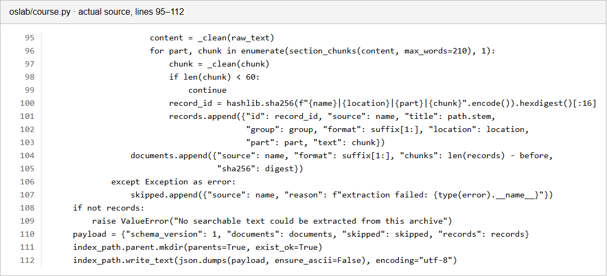

We built a local study tool around the material supplied for our Operating Systems course. It searches the notes, shows the file and page or slide behind each result, and can ask a local language model to explain the retrieved text. It also reviews selected C lab-code patterns without running student code and has a separate CPU scheduling simulator.
The main input was the course OS.zip archive. It contained 54 non-directory entries. We extracted searchable text from 33 files: 16 PPTX, 15 PDF and 2 DOCX. This produced 553 passages. We kept the original filename and page or slide for each passage. The archive and processed text stay on the local machine and are excluded from the public Git repository.
The importer skipped 21 entries: 19 were formats this version cannot extract as text, mainly older PowerPoint files and images; two were temporary or project-planning files. A separate public demo set has three short Markdown lab notes, split into 21 instructional sections, and five reviewed C cases. We use that small set for repeatable tests. It is not a substitute for the course archive.
We did not train or fine-tune the language model on these files. The application retrieves relevant passages at question time and sends only those passages, plus any pasted code, to a model running on this computer.
The ZIP importer rejects unsafe paths and oversized entries, reads supported files, and records a reason for every skipped entry. PDF text is extracted page by page, PPTX text slide by slide, and DOCX text by paragraph. We normalize Unicode and spacing, divide long text into chunks of up to 210 words, and discard chunks shorter than 60 characters. A SHA-256 hash identifies each source file; a second stable ID identifies each passage.
The resulting local JSON index stores the text, file type, title, original location and hash. At search time we use BM25 for word matching and latent semantic analysis (TF-IDF followed by truncated SVD) for statistical similarity. Reciprocal-rank fusion combines their rankings. LSA is a local low-rank text method, not a neural embedding model.
The app exposes the per-file passage counts, hashes and skip reasons so that an import can be checked instead of treating the ZIP as a black box.
The backend is Python and serves a local web interface. oslab/course.py performs import and hybrid retrieval. oslab/code_review.py finds selected OS calls such as fork, pipe, read, wait, mutex and semaphore calls; it reports source lines and cautious next checks. oslab/local_model.py calls a local Qwen3 4B instruction model through llama.cpp. The model returns structured answer points and visual steps with source IDs. The backend rejects invalid source IDs and suppresses an answer when the retrieved passages do not cover the question.
For a pipe reader looping until EOF with no close() call, the code reviewer produces a checked walkthrough from the source lines and pipe notes. This case is handled directly because our model tests showed it could invent descriptor operations. Other code questions may receive model suggestions, always labelled as hypotheses. Pasted code is never compiled or executed. The scheduling lab is separate Python logic for FCFS, nonpreemptive SJF and Round Robin; its timelines and waiting-time values are calculated, not generated by the model.

Figure 1. Actual lines from oslab/course.py. The importer creates passage IDs, preserves source location and records file hashes and extraction failures. Full source is in the repository.
The local model is optional for basic retrieval, the checked pipe example and scheduling. The UI shows the original excerpts even when the model is unavailable.
The private course import gave 33 readable files and 553 passages from 54 entries. That is an extraction count, not a measure of answer accuracy. We have not yet labelled relevance judgments for the private course material, so we cannot report Recall@k or model accuracy on that archive.
For the small public demo set, we reran the repository evaluation. The parser found all 21 labelled Markdown headings across three files, with 1.000 heading precision and recall and complete recorded metadata. This only checks the controlled Markdown format; it says nothing about OCR or PDF extraction quality.
| Retrieval method | Recall@3 | MRR@10 | nDCG@10 |
|---|---|---|---|
| BM25 | 0.917 | 0.701 | 0.777 |
| LSA | 0.833 | 0.722 | 0.791 |
| Hybrid rank fusion | 1.000 | 0.847 | 0.886 |
Table 1. Twelve labelled queries over the small public demo corpus, one relevant section per query. These values must not be reported as performance on the professor's files.
The earlier fork/wait diagnostic benchmark matched all four held-out failure variants at rank 1. Two variants share each failure label, so 4/4 is a regression check for that narrow setup, not evidence that arbitrary student programs can be debugged. No Linux runtime traces were collected for this benchmark.
Manual checks of the current course search found relevant passages for page faults and semaphores. A request comparing disk-scheduling algorithms was a useful failure case: the ZIP contained a slide naming disk scheduling but not enough detail for that comparison. The app now says the evidence is insufficient and leaves the closest passages visible. The browser smoke check passed the theory, code review, scheduling and data views. None of these checks is a student learning study.
Reproduce the controlled metrics with python -m oslab evaluate. The values above come from results/processing_metrics.json, results/retrieval_metrics.json and results/diagnostic_metrics.json.
We began with a fork/wait lab example and kept building around it. By the time we tried to explain the project to someone else, the interface made that one example look like the main subject. That was our scope mistake. We moved the detailed process model behind relevant questions and made course-wide search the first screen.
We also assumed a ZIP of course material meant all of it was searchable. It was not. Nineteen entries were older presentation files or images that our extractor could not read as text. We now show the skipped entries and reasons. We have not converted those files or added OCR, so some course topics may still be missing from retrieval.
The local model needed more checking than we expected. The first smaller model reversed which process read and wrote a pipe. The 4B model gave a better explanation but, in one test, said the parent closed a descriptor when the pasted code had no close() call. We stopped using free-form model text for that specific EOF-loop pattern and built a source-line walkthrough instead. For other code, the model is still only a suggestion; a citation number does not prove its reasoning is correct.
Our first evaluation numbers looked stronger than the project really was. Hybrid retrieval reached 1.000 Recall@3, but only on 12 synthetic questions; the 4/4 diagnosis result came from closely related fork/wait variants. We now label those scores as controlled regression checks. We do not have a measured accuracy for the professor's archive. The disk-scheduling query exposed another problem: retrieval returned partly unrelated notes, and the model initially filled in algorithm details from its own knowledge. We added a coverage check that withholds a generated explanation when the source material does not support the requested comparison.
If we repeated the work, we would first convert the older files and OCR image-based notes, then manually label a modest set of real course questions with relevant pages. We would test extraction and retrieval on that set before choosing or tuning a language model. That would tell us which errors come from missing text, poor ranking or generation.
For code review, the next step is a parser or compiler-assisted check and carefully isolated execution for approved examples. We would keep source inference, expected behavior and actual observed output separate. For teaching visuals, we would add tested simulators only where the state is computable, and keep model-made diagrams clearly labelled as explanations.
The report describes the build as tested on 12 October 2026. Course files and model weights are local and are not part of the public source repository.